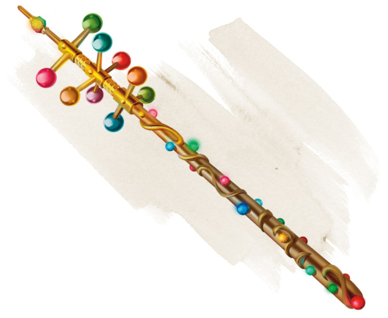

Wand of Wonder
Wand, rare (requires attunement by a spellcaster)
This wand has 7 charges. While holding it, you can use an action to expend 1 of its charges and choose a target within 120 feet of you. The target can be a creature, an object, or a point in space. Roll d100 and consult the following table to discover what happens.
If the effect causes you to cast a spell from the wand, the spell's save DC is 15. If the spell normally has a range expressed in feet, its range becomes 120 feet if it isn't already.
If an effect covers an area, you must center the spell on and include the target. If an effect has multiple possible subjects, the DM randomly determines which ones are affected.
The wand regains 1d6 + 1 expended charges daily at dawn. If you expend the wand's last charge, roll a d20. On a 1, the wand crumbles into dust and is destroyed.
If the effect causes you to cast a spell from the wand, the spell's save DC is 15. If the spell normally has a range expressed in feet, its range becomes 120 feet if it isn't already.
If an effect covers an area, you must center the spell on and include the target. If an effect has multiple possible subjects, the DM randomly determines which ones are affected.
The wand regains 1d6 + 1 expended charges daily at dawn. If you expend the wand's last charge, roll a d20. On a 1, the wand crumbles into dust and is destroyed.
| d100 | Effect |
|---|---|
| 01-05 | You cast slow. |
| 06-10 | You cast faerie fire. |
| 11-15 | You are stunned until the start of your next turn, believing something awesome just happened. |
| 16-20 | You cast gust of wind. |
| 21-25 | You cast detect thoughts on the target you chose. If you didn't target a creature, you instead take 1d6 psychic damage. |
| 26-30 | You cast stinking cloud. |
| 31-33 | Heavy rain falls in a 60-foot radius centered on the target. The area becomes lightly obscured. The rain falls until the start of your next turn. |
| 34-36 | An animal appears in the unoccupied space nearest the target. The animal isn't under your control and acts as it normally would. Roll a d100 to determine which animal appears. On a 01-25, a rhinoceros appears; on a 26-50, an elephant appears; and on a 51-100, a rat appears. |
| 37-46 | You cast lightning bolt. |
| 47-49 | A cloud of 600 oversized butterflies fills a 30-foot radius centered on the target. The area becomes heavily obscured. The butterflies remain for 10 minutes. |
| 50-53 | You enlarge the target as if you had cast enlarge/reduce. If the target can't be affected by that spell, or if you didn't target a creature, you become the target. |
| 54-58 | You cast darkness. |
| 59-62 | Grass grows on the ground in a 60-foot radius centered on the target. If grass is already there, it grows to ten times its normal size and remains overgrown for 1 minute. |
| 63-65 | An object of the DM's choice disappears into the Ethereal Plane. The object must be neither worn nor carried, within 120 feet of the target, and no larger than 10 feet in any dimension. |
| 66-69 | You shrink yourself as if you had cast enlarge/reduce on yourself. |
| 70-79 | You cast fireball. |
| 80-84 | You cast invisibility on yourself. |
| 85-87 | Leaves grow from the target. If you chose a point in space as the target, leaves sprout from the creature nearest to that point. Unless they are picked off, the leaves turn brown and fall off after 24 hours. |
| 88-90 | A stream of 1d4 x 10 gems, each worth 1 gp, shoots from the wand's tip in a line 30 feet long and 5 feet wide. Each gem deals 1 bludgeoning damage, and the total damage of the gems is divided equally among all creatures in the line. |
| 91-95 | A burst of colorful shimmering light extends from you in a 30-foot radius. You and each creature in the area that can see must succeed on a DC 15 Constitution saving throw or become blinded for 1 minute. A creature can repeat the saving throw at the end of each of its turns, ending the effect on itself on a success. |
| 96-97 | The target's skin turns bright blue for 1d10 days. If you chose a point in space, the creature nearest to that point is affected. |
| 98-00 | If you targeted a creature, it must make a DC 15 Constitution saving throw. If you didn't target a creature, you become the target and must make the saving throw. If the saving throw fails by 5 or more, the target is instantly petrified. On any other failed save, the target is restrained and begins to turn to stone. While restrained in this way, the target must repeat the saving throw at the end of its next turn, becoming petrified on a failure or ending the effect on a success. The petrification lasts until the target is freed by the greater restoration spell or similar magic. |
Dungeon Master´s Guide (SRD)
